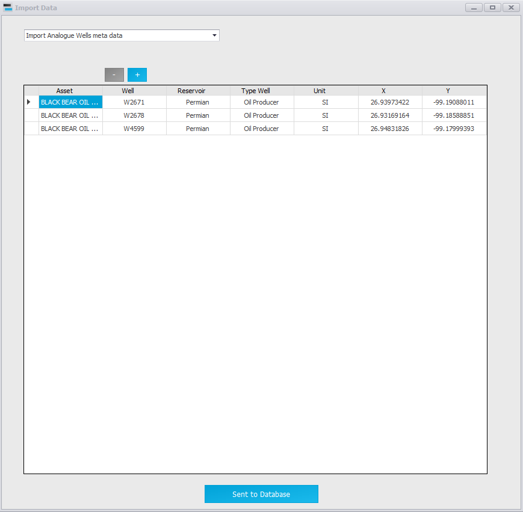
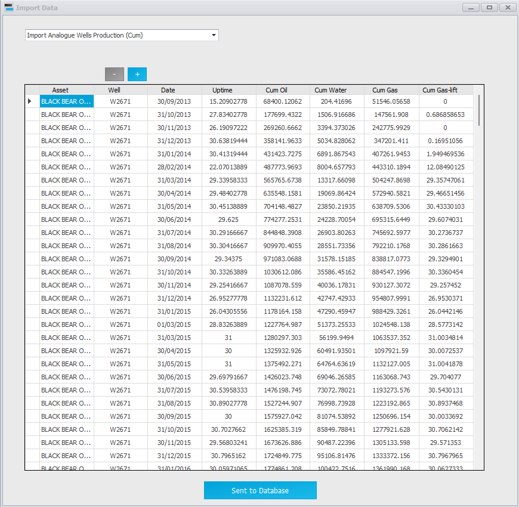
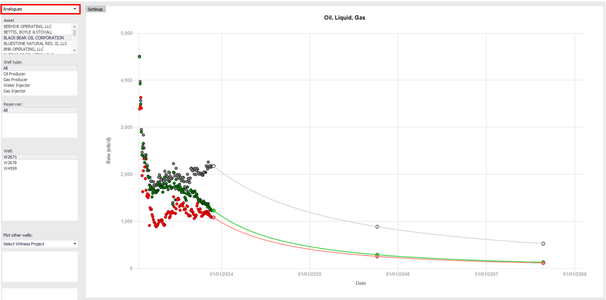
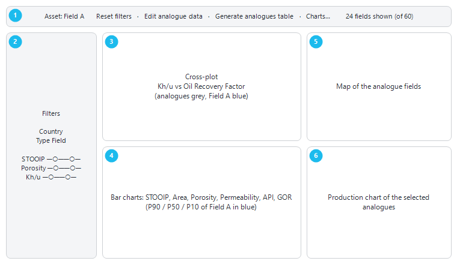

|
Analogues
1. Overview — analogue wells and analogue fields
Analogues are data from other fields that guide your own forecast. Precept handles them at two levels:
•Analogue wells — the production history of wells in other fields. You view them and fit decline curves on them in Decline Curves, plot them behind your own wells, or turn an analogue field into a Precept model (sections 2 and 3).
•Analogue fields — one row of reference properties per field (country, field type, STOOIP, recovery factor, permeability, Kh/u...). You screen them in the "Analogue Screening" dashboard to find the fields most similar to yours (sections 4 and 5).
Analogue data are shared by all assets of the database.
2. Import analogue well data
1.Click "Decline Curves" on the main ribbon.
2.Click "Import Analogues Data" in the "Analogues" group of the Decline Curves ribbon. The "Import Data" window opens.
3.Choose the data in the list at the top (table below). For production, first choose "Import Allocated data as Rate" or "Import Allocated data as Cum" in the second list.
4.Paste the data from Excel (Ctrl+V), then click "Save".
The "Analogues" group can be turned off for some assets. If you do not see it, contact Cleverfield.
|
Choice
|
Columns
|
|
Import Analogue Wells meta data
|
Asset (the analogue field), Well, Reservoir, Type Well (Oil Producer, Gas Producer, Water Injector, Gas Injector), Unit ("Oilfield" or "Metric": the units of that asset's production data), X, Y, Producing interval.
|
|
Import Analogue Wells Production (Rate)
|
Country, Asset, Well, Date, Uptime, Oil, Water, Gas, Gas-lift. The Country groups the analogue assets in Decline Curves.
|
|
Import Analogue Wells Production (Cum)
|
Asset, Well, Date, Uptime, Cum Oil, Cum Water, Cum Gas, Cum Gas-lift.
|
|
Import Analogue Wells trajectories (optional)
|
Asset, Well, MD, X, Y, TVDSS.
|
|
Import Analogue Fields meta data
|
Field-level reference data (shown after you change the Rate / Cum list). The Analogue Screening editor (section 5) is the easier way to maintain these data.
|

Analogue wells meta data.

Analogue wells production, pasted from Excel.
To remove analogue wells, click "Delete analogue wells" in the "Analogues" group, pick the analogue asset in the list, select the rows of the wells and click "Delete from database". Their meta data, production and trajectories are deleted.
3. Use analogue wells in Decline Curves
•View and fit an analogue well — in the project list of Decline Curves, choose "Analogues - <Country>". The list below it becomes "Asset": pick the analogue asset, then the well. Its history is plotted and you can fit a decline curve on it like on any other well.
•Compare with your wells — in the witness project list ("Select Witness Project", under the well list), choose "Analogues - <Country>" to plot analogue wells behind the well you are working on. If both wells have a producing interval, the analogue rates are scaled by the ratio of the producing intervals.
•Start a model from an analogue field — with an analogue asset selected, click "Convert to Precept model". Precept creates a new asset with that name (project "Base" and scenario "Mid case" by default), with the analogue wells and their production history as allocated data. Precept warns you if the forecast start date does not follow the last analogue production date.

An analogue well in Decline Curves.
4. Analogue Screening — find the closest analogue fields
Click "Field data" on the main ribbon, then "Analogues dashboard" on the ribbon of the "Fields data" window. The "Analogue Screening" window opens. It shows every analogue field, and your own field (the asset selected in "Fields data", with its P90 / P50 / P10 values) in blue for comparison.

Figure 1 — Layout of the Analogue Screening window.
4.1 Filters
The left panel, under "Filters", has one filter per property of the analogue data:
•Text properties (for example Country, field type) — a list of values, "Country" first. Selected values are kept. Click a value to keep only it; Ctrl+click to add or remove values; Shift+click for a range.
•Numeric properties — a slider with a minimum and a maximum handle. A field is hidden only when it has a value outside the range; a field with no value for that property is kept.
•"Reset filters" (top right) clears every filter and every highlight.
Every chart, the map and the count ("n fields shown (of N)") update as you filter. Above the filters, "Matching analogues" shows one tile per field that passes the filters.
4.2 Charts and map
•Cross-plot (top left) — any two properties against each other: choose them in the "X" and "Y" lists. By default Kh/u against oil recovery factor, with Kh/u on a log scale.
•Bar charts — one per property, one bar per field, sorted by value. Analogue fields are grey, your field's P90 / P50 / P10 are blue. "Charts…" opens "Choose analogue charts": tick the properties you want a chart for. The choice is saved and reused.
•Map (top right) — the fields at their X / Y position (longitude / latitude): oil fields green, gas fields red, others grey, your field blue.
•Production chart (bottom right) — the oil production of the highlighted fields, either "Field total production vs date" or "Oil rate per well vs production time" (months since each well's first production, so the wells can be compared). It uses the analogue well production imported in section 2, matched on the asset name.
Click a bar, a point, a tile or a map bubble to highlight that field everywhere (maroon). Ctrl+click adds or removes fields; Esc clears the highlight. Right-click a chart for the usual formatting options; double right-click copies it to the clipboard.
4.3 Analogues table
"Generate analogues table" opens the "Analogues table" window: one row per standard property (STOOIP, EUR, recovery factor, area, pressure, porosity, permeability, API, GOR, Kh/u, well spacing...), one column per field that passes the filters, then your field's P90, P50 and P10.
5. Import and edit the analogue field reference data
Click "Edit analogue data" in the Analogue Screening window. The "Analogue data" window shows one row per field and one column per parameter. Every change is saved at once; the dashboard refreshes when you close the window.
•"Add field" / "Delete field" — add or delete a field (a row). "Field" is the key: two fields cannot have the same name.
•"Paste (Excel)" (or Ctrl+V) — paste rows copied from Excel. Fields that already exist are updated; new ones are added. Precept reports how many were added and updated.
•"Add parameter" — add a column: "Parameter name:", "Type:" ("Number" or "Text") and an optional "Unit (optional):". The parameter is also added to the field data of your assets. A Number parameter gets a slider and a chart; a Text parameter gets a list filter.
•"Rename parameter" / "Delete parameter" — click a cell in the parameter's column first. Deleting a parameter removes it from every field, in the analogue data and in the field data, and cannot be undone. Standard parameters cannot be renamed or deleted.
Include a unit in the parameter name where it helps (for example "Area (km²)"): the dashboard shows names exactly as stored. Your own field's values come from the "Fields data" window; parameters are matched by name, even when the two spell them slightly differently (for example STOOIP and STOIP).
|